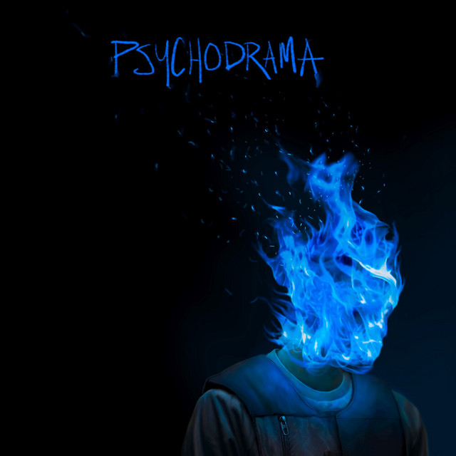

Dynamic Island.
Native on your Mac.
Turn your camera notch into a fluid, living command deck. Effortless Spotify & Apple Music controls, 1-click meeting joins, a temporary drag & drop pocket, and focus timers.
Because Atoll is independent software, macOS might say “Apple cannot verify Atoll.dmg”. Open in 2 clicks:
- Click Done (don't move to bin).
- Go to System Settings > Privacy & Security.
- Scroll down & click “Open Anyway”.
curl -sSL https://atoll-nine.vercel.app/install.sh | bash
Universal Binary (M1/M2/M3/M4 & Intel) • 704 KB
Experience the Notch in Real-Time

Pro-Tip: Seamlessly detects active Chrome, Arc & Safari media, alongside Google Calendar Google Meet URLs with automated workspace profile switching.
Everything you need.
Zero distractions.
Crafted from the ground up in Swift and AppKit. Atoll anchors into your notch without stealing focus, draining battery, or phoning home.
Spotify, Apple Music & YouTube
Native Spotify and Apple Music playback hooks, plus non-blocking automated detection for YouTube and web audio in Chrome, Arc, and Safari.
Smart Meeting Alerts & Routing
Pops down unobtrusively for upcoming calls. Parses the calendar event's domain to trigger the exact Google Chrome profile (Work vs Personal) without duplicating tabs.
Drag & Drop File Pocket
Stage screenshots, PDFs, or code snippets directly into the notch. Stays pinned on top across Mission Control Spaces ready to drop into Slack or Mail.
Peripheral Focus Timer
Quick 5, 15, or 25-minute Pomodoro sessions. Renders a subtle monospaced countdown on the right ear of the notch without crowding your active menu bar.
Multi-Display Geometry
Understands external setups. Automatically anchors to the physical Retina camera notch and gracefully adapts to notchless Apple Studio Displays as a floating pill.
Pure Swift & Zero Bloat
Zero Electron. Compiled directly with Apple's LLVM toolchain into an ultralight 704 KB binary. Uses less memory than a blank browser tab with 0.0% idle CPU.
Control everything from your fingertips.
Tactile global hotkeys pre-configured right out of the box.
Frequently Asked Questions
curl -sSL https://atoll-nine.vercel.app/uninstall.sh | bash
This terminates processes, removes the app bundle, and wipes all cache files cleanly.
Ready to elevate your Mac?
Download Atoll today and experience your notch like never before. Instant install, ultra-lightweight, and completely free.